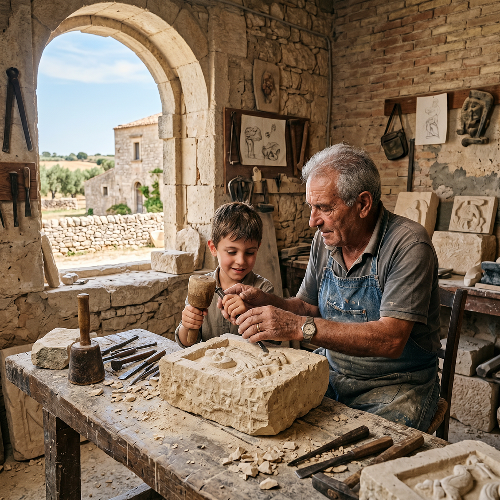
Pietro Laureano · UNESCO Consultant
«Every day the death of an old person, the abandonment of a village by a farmer, determines the disappearance of a library of local knowledge indispensable to face new challenges.»
Africa Forum, Rome 2008
The natural climate-control system of Baglio San Michele does not arise from a contemporary invention, nor from an operation of stylistic citation. It arises from the will to understand and make operative again ancient building principles, matured in the Mediterranean and sedimented in the culture of the place. The aim is not to imitate distant forms, but to reactivate a climatic intelligence that already belongs, directly or indirectly, to the Sicilian tradition.
What is meant by vernacular architecture
Vernacular architecture is the architecture produced over time by the communities of a territory, without the filter of a formal academic design. It is the constructive expression of a people in a given place: it arises from climate, available materials, transmitted techniques and the organisation of daily life.
Its fundamental characters are rootedness in the site, cumulative and anonymous knowledge, intelligent response to climatic conditions, use of local materials and an economy of means that generates functional clarity. Beauty, when it emerges, derives from proportion, constructive sincerity and the patina of time, not from applied ornament.
The baglio and the masseria belong fully to this tradition. They are organisms built to answer agricultural, climatic and protective needs, organised around a courtyard, realised with the stone of the place and thought to collaborate with the climate rather than oppose it. Understanding Baglio San Michele as vernacular architecture means recognising in it a primary source of constructive intelligence, still valid.
The genealogy of the baglio
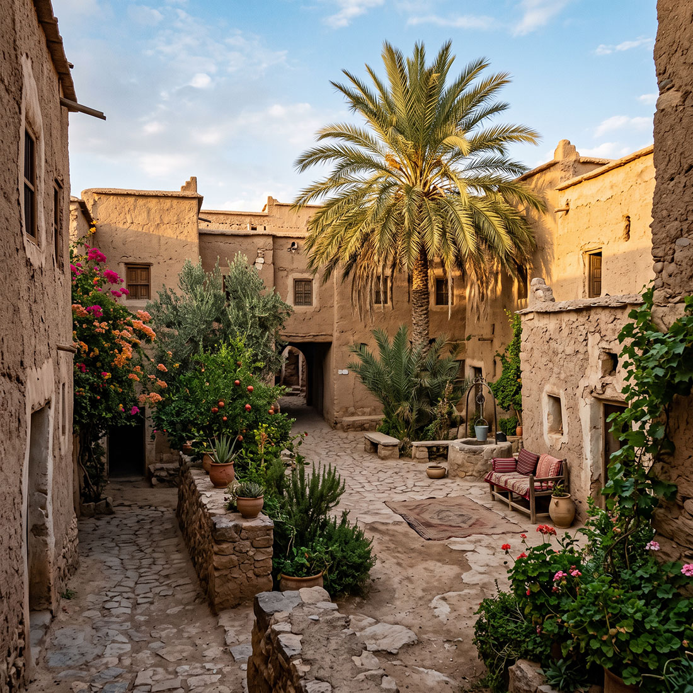
واحة
Wāḥa
The oasis is not born of nature. It is born of the decision of a human group to stay — and to work together to wrest fertility from the sand. Rainwater collection, underground channels, trees planted in sequence to create microclimates: every oasis is a collective project of survival. The oasis teaches that a place does not exist without the community that wants it.
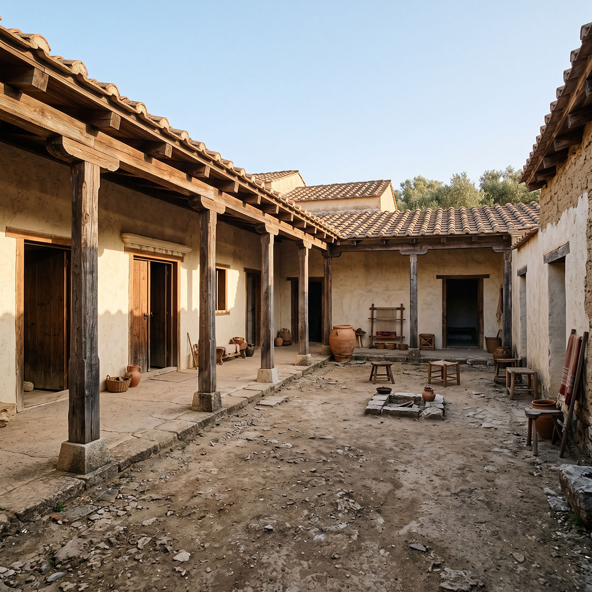
Αὐλή
Aulé
In ancient Olynthus, houses opened inward, not toward the street. The central courtyard — the aulé — oriented to the south received the low winter sun and was shaded in summer by the overhang of the roof. It was not architecture for the rich. It was intelligence applied to climate, within everyone's reach.
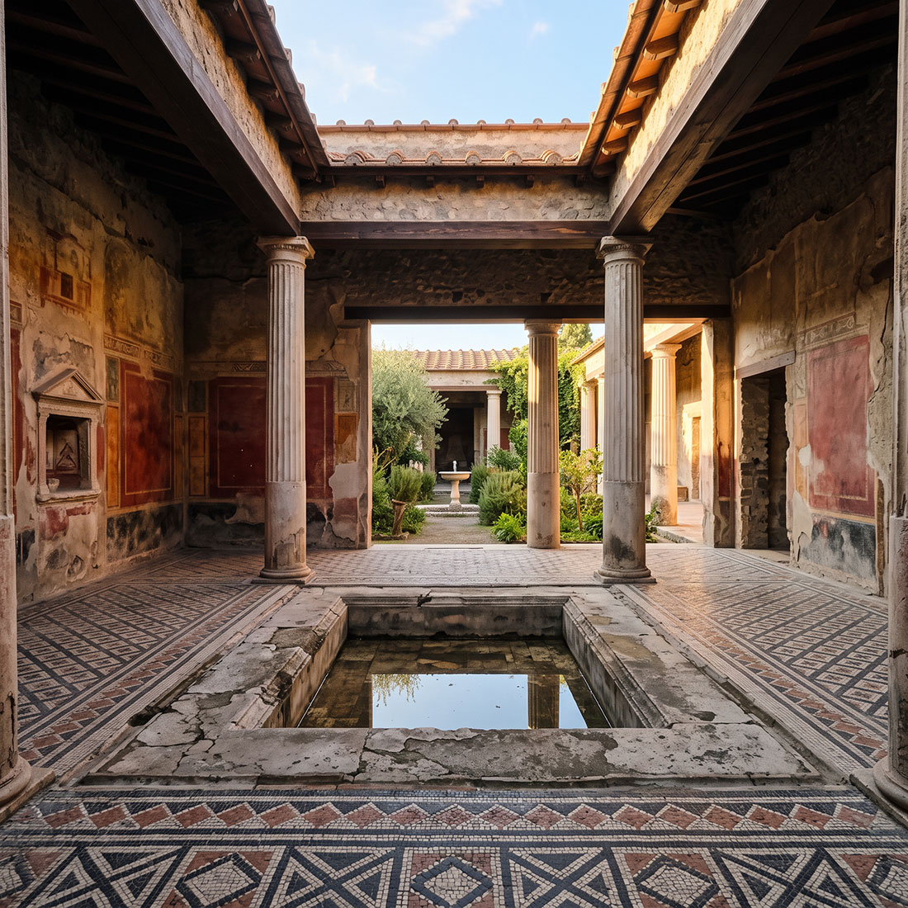
Atrium
Rome · 2nd century BC – 5th century ADThe Roman domus adds two elements to the Greek principle: the atrium, which collects rainwater in a central basin — the impluvium — and the peristyle. Water collected flowed into cisterns under the floor and was used for irrigation. No waste, no external system: the building was autonomous because it had been designed to be so.
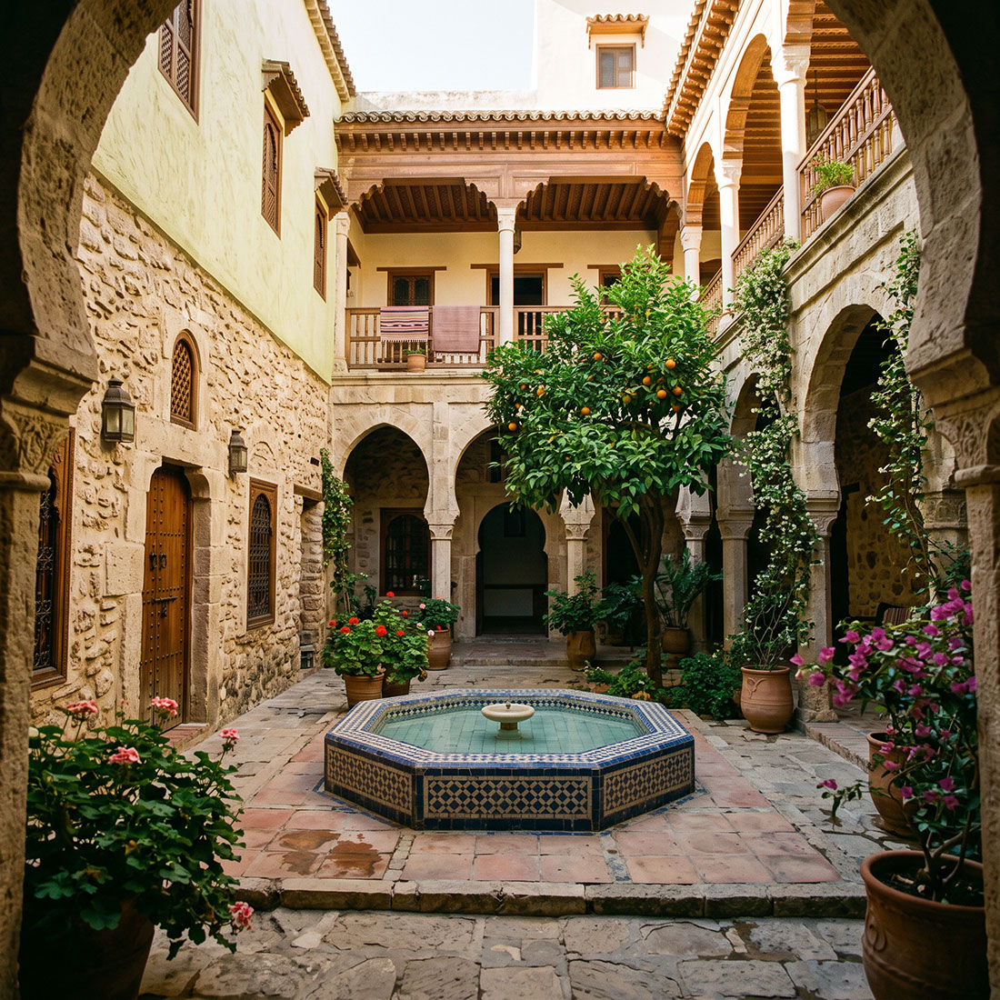
حوش
Ḥawsh
The Arabs bring to Sicily the desert version of the same principle: the house closes toward the outside as a compact block, thick walls that insulate from the heat, and opens toward the sky through an internal courtyard — the حوش (ḥawsh) — where the water of a fountain cools the air by evaporation and vegetation filters the light. The cultural axis Andalusia–Arab-Norman Sicily finds here one of its most direct expressions on the territory.
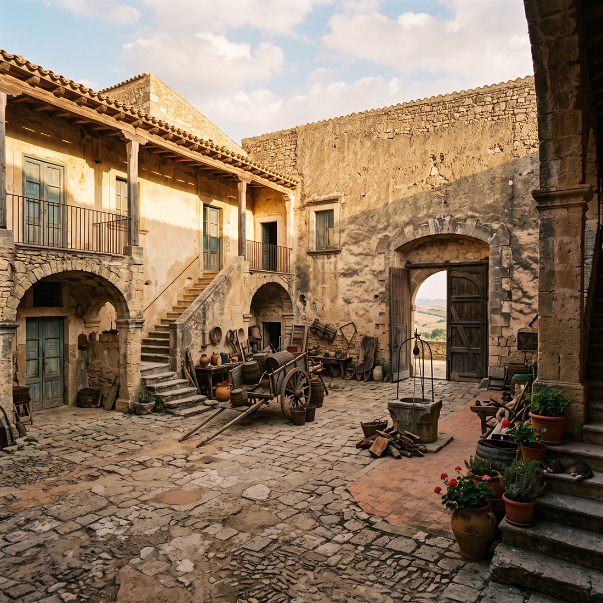
Baglio
Western Sicily · 15th–18th centuryThe baglio is the final synthesis. Walls of local limestone, high and thick, which in summer keep the cool and in winter radiate the accumulated heat. A single portal — defensive toward the outside, welcoming toward the inside. A closed courtyard that is at once space for work, meeting and rest. Underground cisterns. Loggias and porticoes. And always a space for the sacred: the chapel. The baglio was not a palace. It was a system: self-sufficient, communal, designed to last generations.
The cultural axis of reference
The Mediterranean has for centuries been a space of exchange of constructive knowledge. For the climate-control system of the Baglio the most pertinent reference is not generic, but concentrates on the axis that runs from Islamic Andalusia to the Maghreb and arrives as far as Arab-Norman Sicily. It is a climatic, material and cultural continuity that makes these precedents particularly significant for a Hyblaean building.
Arab-Andalusian architecture
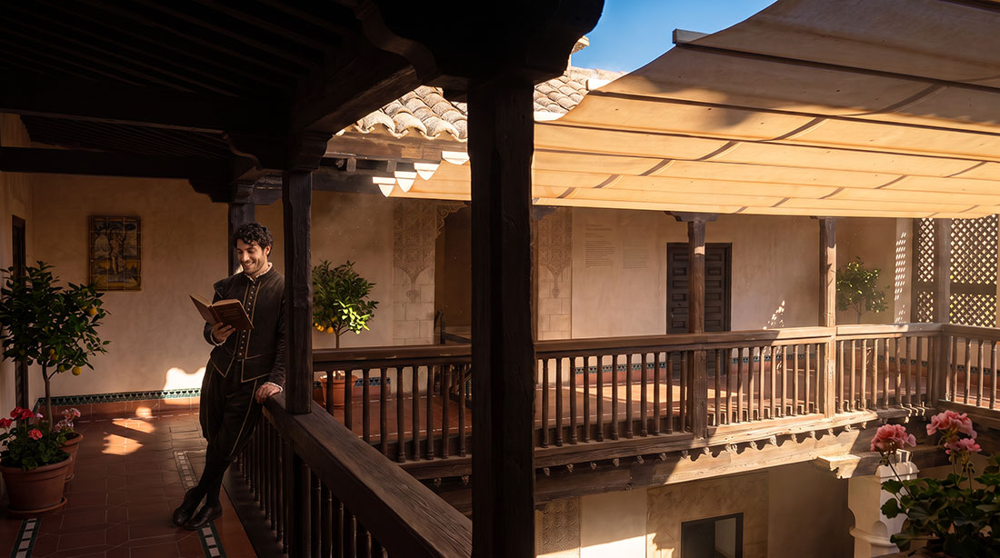
In Arab-Andalusian architecture the patio is not only a formal or representative space: it is a climatic device. Water is kept at low level, often in basins and floor channels, precisely to favour evaporation and create a cool microclimate. Air cools in contact with the wet surfaces and is drawn toward the surrounding rooms.
Emblematic examples are the Patio de los Leones and the Patio de la Acequia at the Alhambra and the Generalife, as well as certain spaces of the Alcázar of Seville. In these spaces the central basin — the فسقية (fisqiya) — and the floor channels are not accessory decorative elements, but essential parts of a passive cooling system.
Arab-Norman Sicily
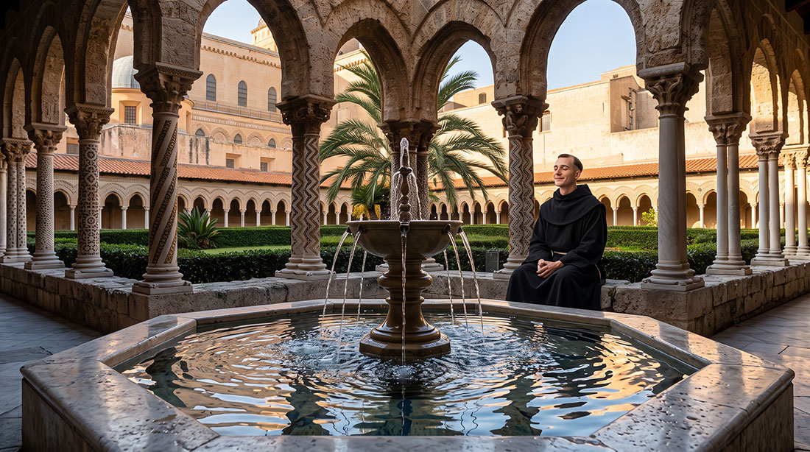
This constructive culture did not remain foreign to Sicily. The Zisa Palace in Palermo constitutes the highest and best-documented precedent: a system of water at floor level, channels and fountains designed to cool the internal rooms. The Arab-Norman heritage was not limited to court palaces. It sedimented, in more humble and practical forms, also in the rural architecture of the island, influencing the way of organising courtyards, cisterns and air paths.
The specific devices: salsabil and the badgir principle

Two devices deserve particular attention.
The سلسبيل (salsabīl) is a fountain designed to maximise the surface of water in contact with the air. Water flows in a thin veil over an inclined slab or a worked surface, increasing evaporation and cooling the air that passes over it. It is not a simple ornamental fountain, but a climatic device.
The بادگیر (bādgīr), or wind tower, belongs to another logic: that of capturing and moving air. In its classical forms it is a tower that intercepts the wind at height and channels it toward the rooms, or that extracts hot air. In the Baglio project this principle is not translated into towers of Persian language, foreign to the character of the place. It is instead reinterpreted in discreet elements — chimneys and ventilation openings in Hyblaean stone — capable of enhancing the stack effect and natural ventilation without altering the image of the building.
The tradition of masserie and bagli
In Sicilian vernacular practice these learned principles were translated into concrete and humble solutions: gathered courtyards, underground cisterns, wells, low basins, thick walls, vertical air paths, permeable screens. Water was not only an ornament, but a resource to be managed with care, linked to the cycle of the cisterns and to agricultural life. The thermal mass of the stone regulated heat between day and night. Orientation and openings were calibrated to the winds and the sun.
It is in this concrete tradition, more than in a generic “oriental inspiration”, that the Baglio project finds its most authentic foundation.
The courtyard as climatic and social device
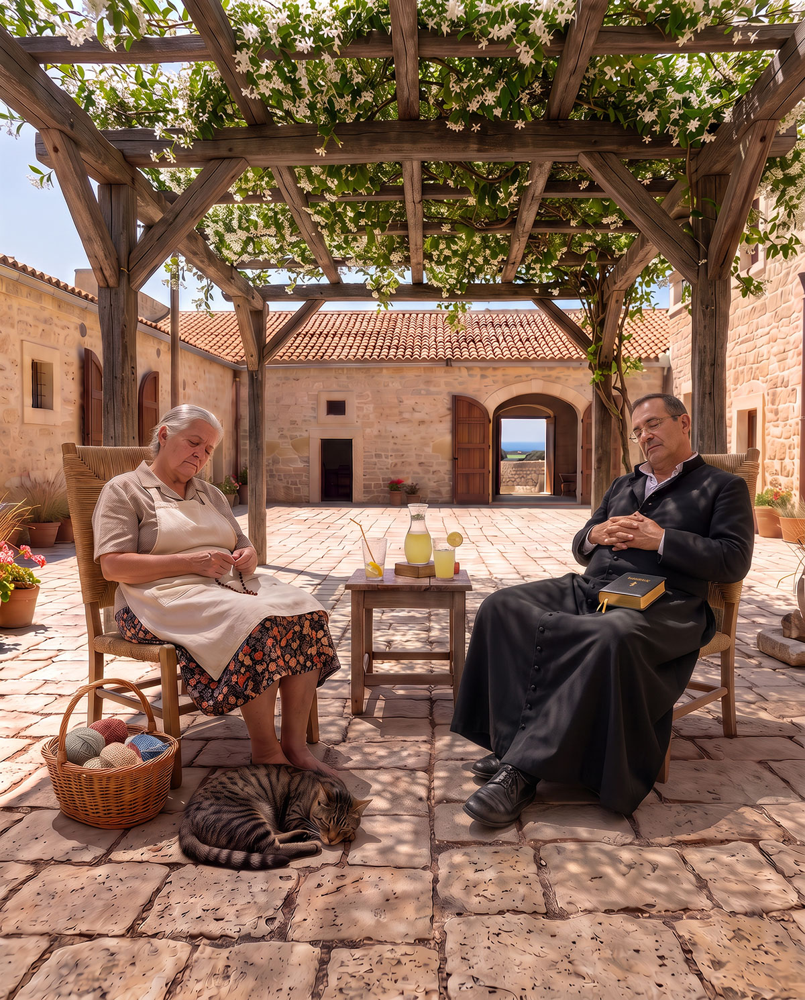
At the centre of the traditional baglio there is not merely an empty space, but a complex device, at once climatic and social. The internal courtyard, heir to the Mediterranean and Arab-Norman patio house, performed an essential thermoregulatory function: it protected from direct sun and prevailing winds, favoured natural ventilation and created a more temperate microclimate than the outside.
But the courtyard was also the place where common life unfolded. Productive activities, moments of shared work and family relations converged there. It constituted the intermediate space between the private dimension of the house and the collective dimension of agricultural labour. This dual nature — climatic and relational — offers today a precious model. At Baglio San Michele the courtyard will not be a decorative element, but the ordering principle of community life.
Water management and hydraulic wisdom
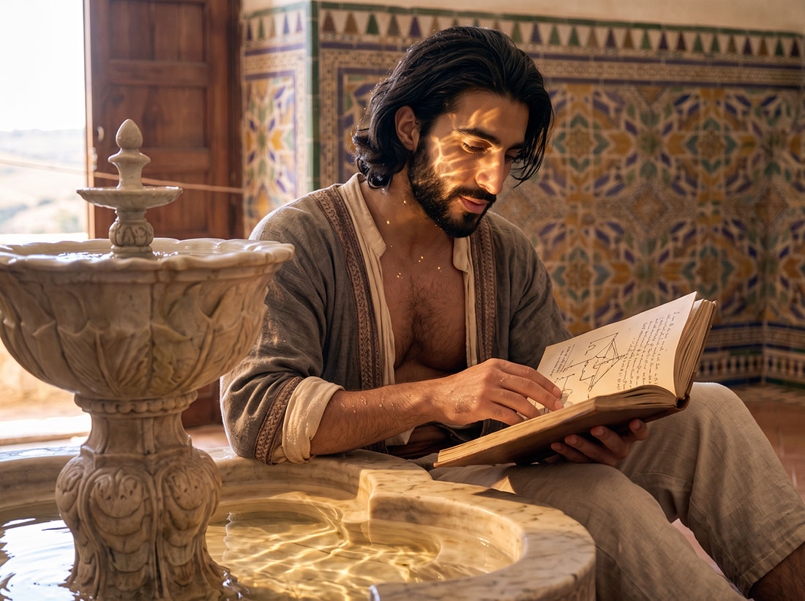
In a territory marked by scarcity of water resources, the survival of Sicilian rural settlements has historically been linked to refined and pragmatic hydraulic wisdom. Cisterns dug or built to collect rainwater from the roofs, drainage and distribution channels, wells and reuse techniques constituted an integrated system for managing the most precious resource.
In the Arab-Andalusian and Arab-Norman tradition this principle reaches particularly refined forms. The سلسبيل (salsabīl) — a fountain with an inclined surface that maximises the area of water exposed to the air — and the ground-level basins (فسقية fisqiya) are not ornaments: they are evaporative cooling devices. The Zisa Palace in Palermo offers an extraordinary and direct example on Sicilian soil.
In the Baglio San Michele project this lesson is taken as a principle: central ground-level fountain with channels and a سلسبيل (salsabīl) in Hyblaean stone in the entrance hall, so that water autonomy and thermal comfort become concrete practice.
Movement of air and vertical devices
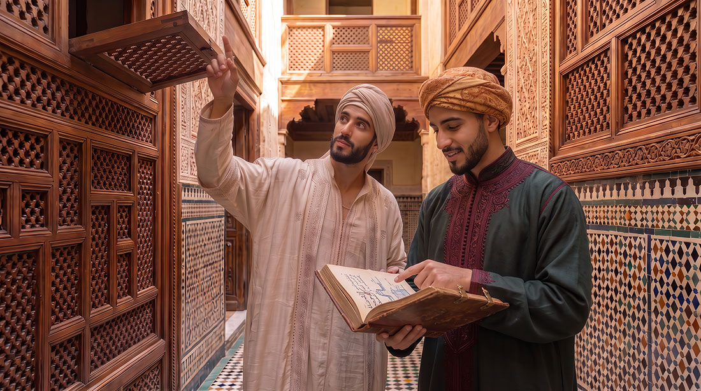
Alongside evaporation, the second fundamental principle of Mediterranean natural climate control is the controlled movement of air.
The بادگیر (bādgīr, wind tower) captures the wind at height and channels it, exploiting differences in pressure and temperature. It is not a matter of copying these towers literally, which are foreign to the Hyblaean landscape. It is a matter of understanding the principle and reinterpreting it in a discreet and local form.
At Baglio San Michele this is translated into the existing vertical path (entrance hall–stairs–terrace) as a natural chimney, and into discreet chimneys and ventilation openings, integrated into the language of the masseria. Evaporation and air movement work together. In winter the system is completed by stoves, fireplaces and the thermal mass of the walls.
The reinterpretation at Baglio San Michele
At Baglio San Michele these principles are reactivated in a sober and local way:
- the central ground-level fountain with diagonal channels takes up the logic of the فسقية (fisqiya) and of the floor channels;
- the سلسبيل (salsabīl) in Hyblaean stone in the entrance hall pre-cools the air entering the vertical path;
- the entrance hall–stairs–terrace system functions as a natural chimney;
- discreet chimneys and ventilation openings, inspired by the بادگیر (bādgīr) principle, enhance capture and extraction;
- pergolas, plants, permeable screens and the thermal mass of the walls complete the system.
In winter the same architectural organism works in reverse: stoves and fireplaces, thermal mass that accumulates and releases heat, controlled closure of the high openings. The same elements change regime according to the season.
The baglio as a self-sufficient ecosystem
The fortified farmhouse was not an isolated productive island, but a small ecosystem in which every element was in relation with the others. Agricultural production, livestock, craftsmanship, dwelling and family life took place within a unitary organism, regulated by the cycles of nature and by the need to optimise available resources.
Productive cycle
Animals provided labour and manure; gardens and fields fed people and beasts; wall structures and open spaces responded to needs of defence, work and daily life.
Work and craftsmanship
Manual work and craftsmanship were not accessory activities, but an integral part of the quality of the place and of its capacity to endure over time.
Territorial intelligence
This model of relative self-sufficiency represented a form of territorial intelligence, today more necessary than ever in the face of the fragility of external supply chains.
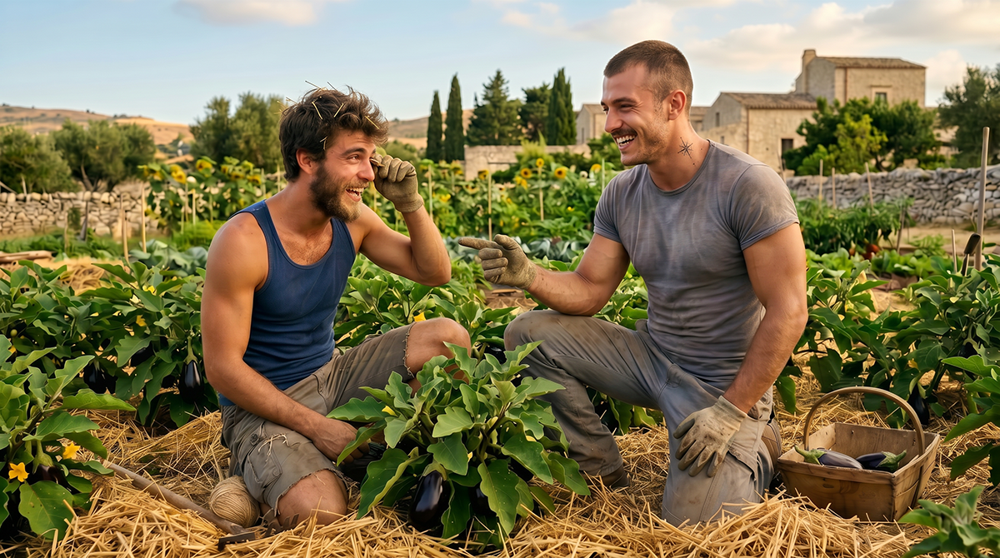
Today, in an era of dependence on external systems and fragility of supply chains, recovering this vision means designing a community capable of producing, at least in part, its own food, of valuing manual work and of maintaining a direct and responsible relationship with the land that hosts it. Baglio San Michele proposes itself as a contemporary interpretation of that ecosystem: not closure, but autonomy; not isolation, but rootedness.
Continuity with local knowledge
Recovering the knowledge of the Mediterranean tradition does not mean claiming to repeat the past or to compose an eclectic mosaic of stylistic citations. It means, rather, recognising in them a heritage of consolidated, culturally rooted and ecologically effective knowledge, and reinterpreting them in the light of present needs.
As Lorena Musotto wrote in her research on sustainable settlements of the Mediterranean tradition, it is a matter of organising self-sustaining and autopoietic social models, capable of perpetuating and regenerating themselves in respect of the climatic, geographic and historical-cultural characteristics of the place.
In this way the intentional community that will take shape here does not interrupt the history of the territory, but continues it with awareness and responsibility. The Baglio is not a museum. It is a living organism that, starting from its historical roots, seeks to answer the questions of our time with the wisdom of those who already knew how to inhabit this territory in a lasting and beautiful way.
Decline and rebirth
After the Unification of Italy the rural residential structure entered into crisis. Baglio San Michele interprets its historical meaning and proposes a radical rebirth, coherent with tradition and oriented toward stable community life.
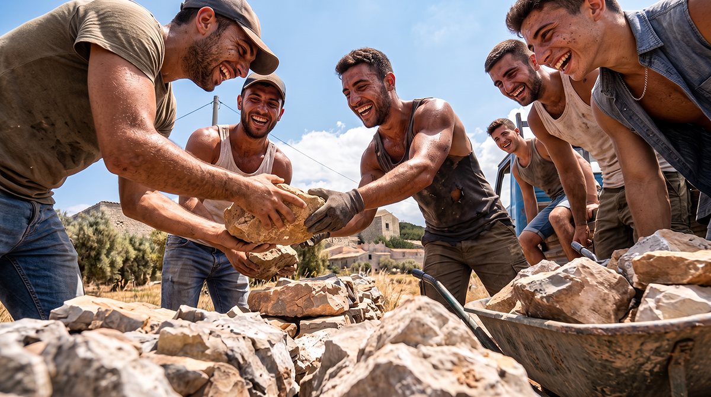
Crisis and transformation
After Unification, the traditional villa and the baglio entered into crisis: large property appeared too slow in yielding returns and bound to archaic mentalities. The historical response was often the scenic recovery of residences. Baglio San Michele operates an analogous but inverted dynamic: it does not modernise an aristocratic architecture to turn it into a prestigious summer residence, but restores a fortified rural organism (the Masseria Torre Mastro) in order to give it a new stable community life, oriented toward family, faith and autonomy.
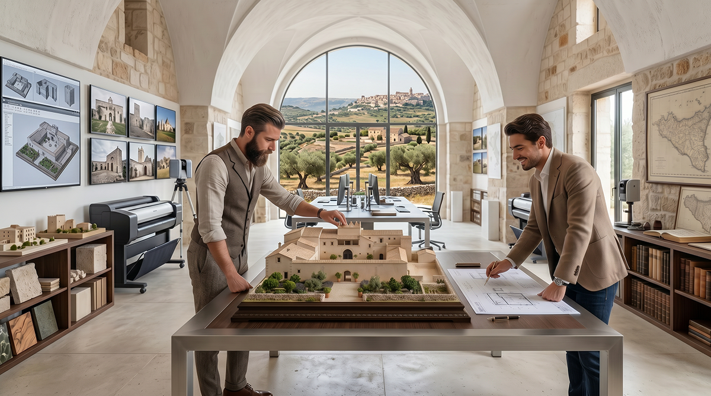
Historical reflection and identity
Historical reflection is a tool for affirming collective values: lineage, tradition, continuity. Architecture becomes a language of rootedness. This is the ideational core of the project: the Baglio is not a generic housing intervention, but an act of rootedness in Sicilian culture and Christian tradition. Maintaining and enhancing the form of the baglio (courtyard, walls, relationship with the countryside) means looking back in order to affirm a living bond with the past, not mere nostalgia.
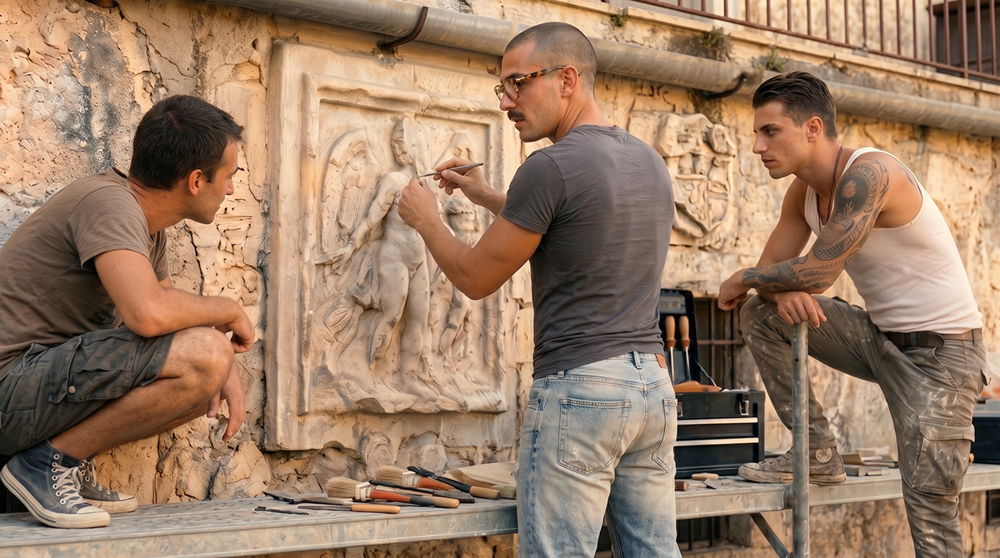
Recovery and new design
Phase 1 is almost entirely a major intervention of recovery and internal reorganisation of the existing baglio (14 apartments). Phase 2 provides for new rural constructions on the masseria’s lands and the restoration of the collapsed wing. The historical lesson is clear: when building anew, it is essential to maintain coherence with the Sicilian typology and with the idea of a traditional intentional community.
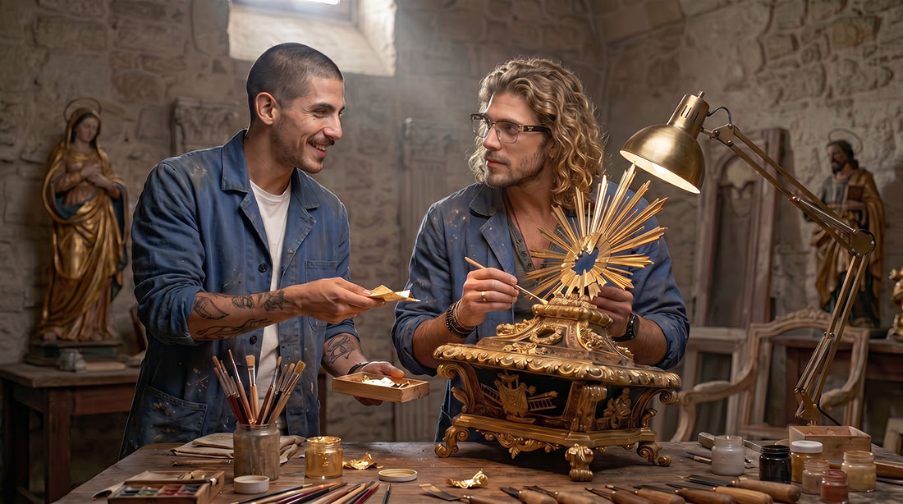
Craftsmanship and the borgo
The happy union of design and craftsmanship is a typical expression of the borgo. Baglio San Michele is not only a container of dwellings, but an organism that brings back to life constructive knowledge, manual work and handmade beauty, in continuity with local tradition. This is exactly what the Archivum Artium and cooperation with the craft and entrepreneurial realities of the Hyblaean territory aim at.
Baglio San Michele
The historical roots of the project are not a cultural ornament, nor an exercise in citation. They are the basis of an architecture that wants to be intelligent, autonomous and beautiful. Baglio San Michele does not copy distant models: it understands ancient principles and makes them operative again within a contemporary community rooted in the Christian faith and in Sicilian culture. In this sense tradition is not nostalgia, but living continuity.
The thesis of the project
Baglio San Michele is not a historic building to be preserved.
It is a millennial technology to be put back into operation.
The historical and architectural references contained in this page are documented, among other sources, in the academic research of Lorena Musotto, «Sustainable settlements of the Mediterranean tradition. The recovery of local knowledge and skills in contemporary planning and design processes», PhD, University of Naples Federico II, XXIII cycle; and in Giuseppe Adani, «Le reviviscenze stilistiche e il villino novecentesco», in Ville dell’Emilia Romagna, Milan, Silvana Editoriale d’Arte, 1982 (first edition), Vol. 2, Dai fasti del Settecento al villino urbano. Pietro Laureano’s quotation is taken from his address at the Africa Forum, Rome, 4 June 2008.